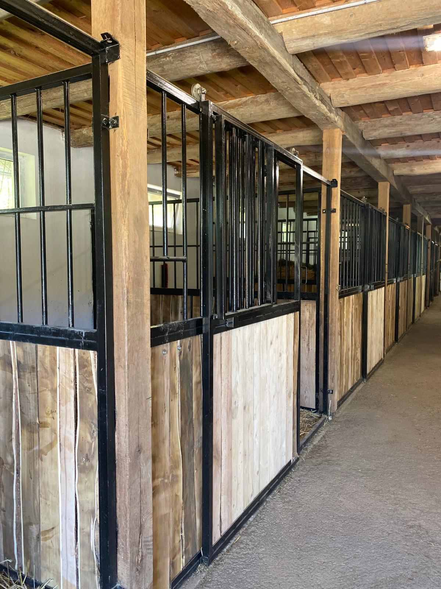
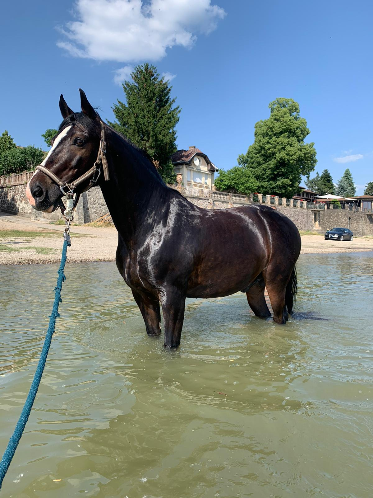
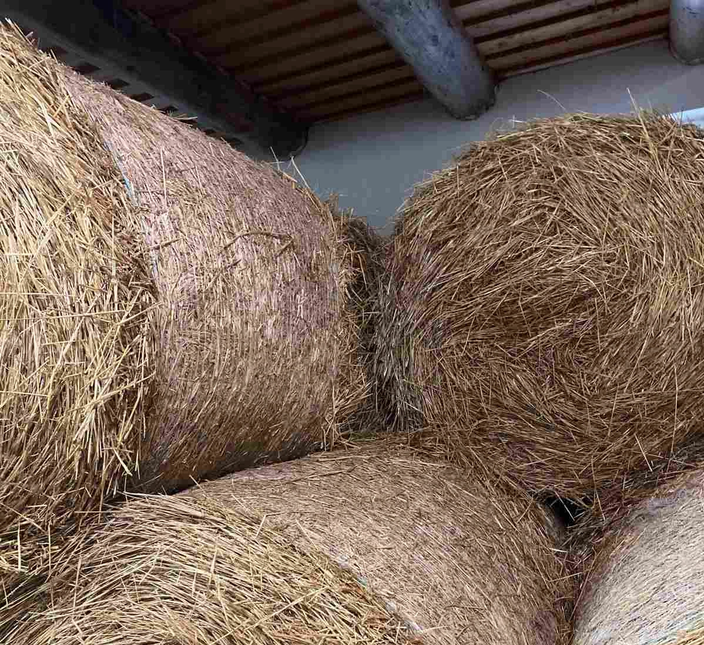

Bértartás




Lovak bértartását válalljuk családias hangulatu magánistállonkban, Budapest közelében, Verőcén. A bértartást bokszban való elhelyezéssel vállaljuk. A lovakat 3x4 méteres boxokban tudjuk elhelyezni. Az istállók naponta vannak trágyázva és frissen szalmázva. Forgácsos almolás is kérhető, de ebben az esetben felárat számolunk fel.
A bokszok önitatóval vannak ellátva. A bértartás díja magában foglalja a ló teljes ellátását: napi
kétszeri,
a lovak egyedi igényeihez igazított mennyiségű abrak, valamint napi 2x vagy 3x szénázás. Az ár tartalmazza
továbbá a gondos almozást, valamint patamosó, legelő, 2 nagy pálya és valamint egy körkarám használatát.
Mindegyik pályánk napi rendszerességgel van karbantartva (boronálva és locsolva). A lovarda jó
elhelyezkedése kiváló tereplovaglási lehetőséget biztosít a felfedezni vágyó lovasok számára.
Bértartott lovaink számára állandó felügyeletet, 24 órás kamerarendszer biztosítja a biztonságot és a
gazdi
nyugalmát.
Igény szerint lehetőség van akár az otthon kényelméből is is szemmeltartani negylábú csaláttagjat , akár
az
éjszaka közepén is az egyéni boxokba felszerelt kamerák segítségével.
A téli időszakban a ló szoláriummal állunk rendelkezésükre (zsetonos rendszer). 10 boxos istálló, nyeregtáróló helység, öltőző, patamosó, Bemer mágneses takaró karámozás igény szerint. (A sérülések megelőzése érdekében egyéni karámozásra van lehetőség).
A lovardánkba, ranch-re újonnan érkező lovaknak a következő állategészségügyi feltételeknek kell megfelelniük: megfelelő alapimmunizálást követő, 6 hónapnál nem régebbi lóinfluenza elleni védőoltás igazolása, 1 évnél nem régebbi negatív vérvizsgálati eredmény a következő fertőző betegségekre:
A fenti elvárások megfelelnek a Magyar Lovas Szövetség által rendezett bármilyen lovas versenyeken megkövetelteknek.
A téli időszakban a ló szoláriummal állunk rendelkezésükre (zsetonos rendszer). 10 boxos istálló, nyeregtáróló helység, öltőző, patamosó, Bemer mágneses takaró karámozás igény szerint. (A sérülések megelőzése érdekében egyéni karámozásra van lehetőség).
A lovardánkba, ranch-re újonnan érkező lovaknak a következő állategészségügyi feltételeknek kell megfelelniük: megfelelő alapimmunizálást követő, 6 hónapnál nem régebbi lóinfluenza elleni védőoltás igazolása, 1 évnél nem régebbi negatív vérvizsgálati eredmény a következő fertőző betegségekre:
- fertőző kevésvérűség (EIAV)
- takonykór (Malleus)
- tenyészbénaság (Ttrypanosomiasis)
A fenti elvárások megfelelnek a Magyar Lovas Szövetség által rendezett bármilyen lovas versenyeken megkövetelteknek.
| Ha hozzánk jössz, ezekkel várjuk a lovad | Téged meg az alábbiakkal várunk |
|---|---|
| legelő vagy egyedi karámozási lehetőség | közösségi helység öltözővel és vizesblokkal |
| etetések száma igény szerint | kinti patamosó, lókikötő |
| kiváló szemes és szálastakarmány | lóúsztatási lehetőség |
| pihe-puha mélyalmolás a hideg téli éjszakákon | korlátlan tereplehetőség (szívesen megmutatjuk a legszebb útvonalakat!) |
| 3 oldalró fedett beállók (építés alatt) | akadálypark (építés alatt) és díjlovagló négyszög |
| kiváló minőségű és szigetelésű angol boxok | zárt nyeregtartó |
| 24 órás felügyelet | tágas parkoló, wifi |
| Bemer vet mágneses takaró és hasonló egészségmegörző lehetőségek | jó társaság! forró tea |